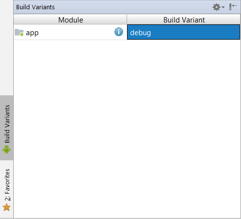
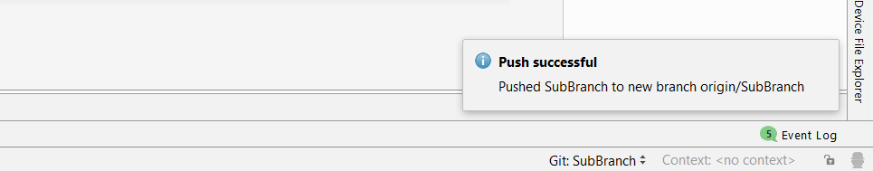
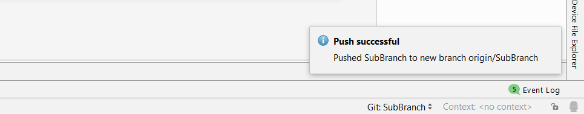
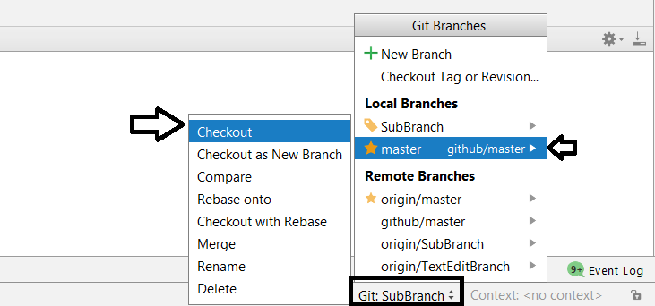

Introduction to Android Studio and ‘Hello World’ Project
Objectives: In this tutorial you will learn about different windows and tools in Android Studio. At the end of this session you will be able to,
- Use different Android Windows.
- Create Android Project.
- Run Android Project in an Emulator.
- Create and locate your project's apk file.
Android Studio is google's official IDE(Integrated Development Environment) for Android Developers.
Android Studio’s job is to provide the interface for you to create your apps and to handle much of the complicated file-management behind the scenes. The programming language you will be using is Java and this is installed separately on your machine. Android Studio is simply where you will write, edit and save your projects and the files that comprise said projects.
Now we are ready to create our first Android Project. Follow the below steps:
1. Go to ‘File’ -> ‘New Project...’
2. Give Application Name as ‘Hello World’ and click ‘Next’
3. Select ‘Phone and Tablets’ and click next.

4. Select ‘Next’ -> select ‘Empty Activity’ -> Select ‘Next’ -> ‘Finish’
After you create new project you should see screen as follows.
You can’t see other windows ? By default only editor window will be shown where other windows will be in minimized form. The following image shows all the windows in expanded form. Android Studio offers different tools and window for various purposes.
Now you should be able to see a New Window with two tabs open named ‘activity_main.xml’ and ‘MainActivity.java’ in editor window.
1 - Editor Window
The editor window is where you create and modify code. By default editor window shows two files which are layout file (activity_main.xml) and java file (MainActivity.java) . Depending on the current file type, the editor can change. For example, when viewing a layout file, the editor displays the Layout Editor.
2 - Project Window
To open project Window, click on project tab located on the left of editor window. Refer following image.
Now you should be able to see the project window as follows.
When you start a new project, Android Studio creates the necessary structure for all your files and makes them visible in the Project window on the left side of the IDE (click View > Tool Windows > Project). This window provides an overview of the key components inside your project.
There are different views/scopes in project window. By default, Android Studio displays your project files in the Android view. This view does not reflect the actual file hierarchy on disk, but is organized by modules and file types to simplify navigation between key source files of your project, hiding certain files or directories that are not commonly used.
To see the actual file structure of the project including all files hidden from the Android view, select Project from the dropdown at the top of the Project window. When you select Project view, you can see a lot more files and directories.
3 - Gradle Window
Click on the tab named ‘Gradle’ present at the upper right section of the IDE. Refer the attached image.
Gradle Window shows gradle files.
In Android Studio, Gradle is a custom build tool used to build android packages (apk files) by managing dependencies and providing custom build logic. An apk file gets signed and pushed to the device using ADB(Android Debug Bridge) where it gets executed. Apk file can be used to install the application in any android device.
Note : One should not attempt to edit the gradle files. These are auto-generated files by Android Studio which is more than sufficient to build your project. Gradle file manipulation is done at high levels which is out of the scope of this course.
4 - Other Windows
To open Structure Window, just click on the Structure tab present below Project tab. After that you should see following image. You can open most of the windows, just be clicking on their tabs and close the windows by clicking opened windows again.
i) Structure Window
The structured window shows list of methods in your java classes. You can sort them alphabetically or according to their access modifiers using buttons present at upper left corner in the window.
ii) Captures Window
Captures Window contains the results of monitor tools such as memory or CPU monitor. This window does not show any information by default.

iii) Build Variance Window
The build variance window lets you manage your build process. By default you are using something called the debug variant. But there’s also the release variant which you will use when your application is ready for release.
iv) Favorites Window
Favorites window gives you a way to get to the classes and other resources that you use most frequently. By default, three lists are shown for project, bookmarks and breakpoints. You can make any class a favorite by right clicking and selecting add to favorite.
v) Messages Window
Messages window shows any errors or warnings which occurs while building your application. Typical error consists of compilation errors due to inaccurate code or a missing statement.
vi) TODO Window
The TODO window shows a list of all of your ‘to do’ comments. You can make a todo list note just by using double slash in your code followed by any message.
vii) Terminal Window
The Terminal window opens a command prompt through which you can explore the actual files saved in your computer. It can be used to take a quick look in your computer’s current directory structure and files.
Part 3: Running and Building your Application
Now that we learned about the Android studio environment, let’s run our Hello World application. Follow the below steps:
- Click on the ‘run’ icon present in upper right section of IDE or press ‘Shift + F10’ keyboard shortcut.
- Now a pop-up window will appear titled ‘Select Deployment Target’. Select a virtual device from the ‘Available Virtual Devices’ by clicking on it.
- Click ‘OK’.
- Now you should see a virtual device appeared on the screen with the desired output.
Building APK File:
Now we are ready to create and locate ‘Hello World’ application’s apk file. Follow the below steps.
- Select 'Build'
- Select ‘Build APK(s)’
- Click on ‘locate’ from the pop up at bottom right corner.
- In case you missed the pop - up from the bottom right, go to Project window, select ‘Project’ scope from the drop down menu
- Expand ‘Hello World’, then expand ‘app’ -> ‘build’ -> ‘outputs’ -> ‘apk’ -> ‘debug’ as shown in the following image.

NOTE : The difference between running and building the project is when we run a project only the preview of our app is shown not the actual app is created whereas in the process of building a project, IDE produces the installable apk file for us.
Github is a website for storing your project’s files.
It is powered by Git, which, in its turn, is a version control system, a software to help you manage files in a versioned, distributed fashion and is optimized towards software source code files.
It allows you to collaborate with other developers, review any changes they make and file or follow up with issues on the project’s files or resulting software’s behavior.
Since Github is one of the Git repository hosting services which is most widely used, Android Studio provides inbuilt Github integration. We will now upload our Hello World project to Github.
1. Go to ‘File’ - > ‘Settings’ -> ‘Version Control’ -> ‘GitHub’.
2. Since You don’t have a GitHub account, you will click on Sign Up hyperlink.

3. Now click on ‘Sign Up’ button after which you should see above screen.
4. Fill the details appropriately and click on ‘Create an Account’.
5. From this page select ‘Unlimited public repositories for free’.
Note: Repository is nothing but a folder which will have all your project files. ‘Public Repository’ can be accessed by anyone where as ‘Private Repository’ can only be accessed by the user and authorized members. This difference is mainly for the security purpose.
6. This last step is fully optional, you can check the options which you want and submit or skip this step.
7. Now you should get this github welcome screen.
Pushing your Project to Github:
Part 1:
1. Go to ‘Settings’ -> ‘Version Control’ -> ‘Github'
2. Select Auth(Authentication) Type as ‘Password'
3. Now enter your ‘Login’(Github Username) and Password
4. Click ‘OK’.
5. You will see ‘Connection Successful’ message in a pop-up window.
Part 2:
1. Go to VCS tab which is present above editor window.
2. Go to ‘import intro VC’ -> ‘Share Project on GitHub’

3. Now give a name to your Repository on github. You can also add description to your project.
4. Click on ‘Share’.
5. On success, you will see a pop-up window at the bottom right.
6. Click on the hyperlink which is ‘HelloWorld’ in the given image.
7. You will be redirected to your github repository which will look like this. Observe how all the files of your project are uploaded in your github repository.
Committing changes in GitHub:
Now that we’ve understood what repositories are, let's learn how to commit changes to a repository. First, go back to Android Studio.
1. Let’s make a change first. Open ‘activity_main.xml’ in Design Mode.
2. Double click on ‘Hello World’ text. Now you should see an ‘Attributes’ Window on the right side of IDE.
3. Change the text to ‘Hello First Commit’ by typing in the box next to ‘text’ in ‘TextView’ and press enter.
Remember, this change won’t be automatically added in Github repository. The changes are saved in your local machine only. Committing in Github means saving all the changes you made in files at a particular time. To commit a change we need to first ‘add’ the file to ‘Staging Area’
4. Right click on ‘Hello World’ and click on ‘Add’ as shown in the image. You can also use the keyboard shortcut. Now your change is ready for commit.
5. Go to ‘Version Control’ tab -> ‘Local Changes’ tab.
6. Click on the ‘Commit’ button as shown in the image.
7. The first section in ‘Commit Changes’ pop-up window shows the files in which you have made changes. You can select which files changes to get committed. By default all the files with changes will be selected.
8. You can add a commit message which is useful to describe what was the commit about in simple words.
9. In “Diff” section you can see the difference between the same file’s state before and after you made the change. It is used to review your change before you finally commit it.
10. Click on ‘Commit’.
11. If you get following message just click on ‘Commit’ ignoring the warning. Since it is a very simple change, the warning won’t affect the functionality of the application and code.
12. You should see a message at the bottom of the screen.
13. Click on ‘Log’. This will show you all the details about all the commits. To see details about a particular commit, double click on it.
Branching in GitHub:
Whatever changes you made till now were done in ‘Master’ Branch i.e. main branch of the development. To check this fact, you can look at bottom right of your screen which shows text ‘Git:master’. This tells you that you are currently working in master branch.
Github offers a feature called ‘branching’ with which we can create branches other than master branch. This usually done when you diverge from the main line of development and continue to do work without messing with that main line.
Consider a tree for example. A tree always has some branches along with the large trunk. Similarly, branches in Git are smaller parts of the project which need not interfere with the main branch (recall master). They have their own commits and are added to master once they are completed. The master branch is like the trunk of a tree. In most cases, the code contained in the master branch is usually the one being deployed. So Let’s Create a Branch.
1. click on Git:master -> plus 'New Branch'
2. Give name 'SubBranch' to your new branch and click ok.
Note: Observe the checkbox 'Checkout branch'. 'Checkout' in github means 'switching' to a particular branch. In this case this checkbox is checked which means that upon creating your new branch you will switch to this new branch.
3. See the pop-up msg at the bottom of the IDE on Version Control tab. Also notice at right bottom that your branch is changed to 'Git:SubBranch'. See the image.
4. Let's make a change in this branch. Change the text to 'Hello SubBranch !' in layout.
5. Now commit the change with the message 'Hello SubBranch'. Refer Images.
Pushing Created Branch to Github:
Remember, to reflect all the changes you make in local repository to remote repository (Github), you need to push the commits to the remote repository.
6. Right click on the project name as shown in the image and go Git -> Repository -> 'Push'. This will upload all the changes to remote repository.
To check if it had uploaded successfully or not, go to your github account, then go to your repository.
You should see a highlighted row which mentions your branch name along with the button 'Compare and Pull request'. You will learn about pull requests in the next tutorial.
 

Merging in GitHub:
We created branches with the hope that someday they would help the tree grow into its final form.
Merging combines the changes from both branches to form one cohesive branch. It also combines all the commits from the branches. The branch being merged isn't deleted, it's still available and you can keep working on it even after you've merged it.
Let’s merge our branches ‘master’ and ‘SubBranch’.
1. First you need to checkout(Switch) to the master branch for merging. Click on ‘Git:SubBranch’ -> master(Local Branches) -> Checkout.
2. Click on ‘Git:master’ -> ‘SubBranch’ -> ‘Merge’
3. On Version Control tab you will see the corresponding pop-up message. As this was a simple merge there were no errors i.e. no ‘Merge Conflicts’. As we start to merge branches with more changes we will learn about solving ‘Merge Conflicts’.